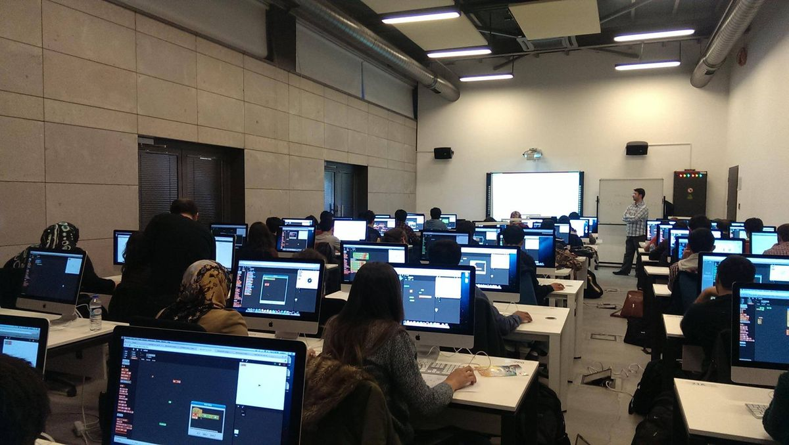

Courses
Discover the wide range of academic courses offered by Kabankalan Catholic College, Inc., designed to help students achieve their educational and career goals. Each program provides opportunities to gain valuable knowledge, develop practical skills, and enhance personal growth. With a commitment to academic excellence, Christian values, and holistic development, KCC prepares students to become competent, responsible, and successful professionals in their chosen fields.

BACHELOR OF SCIENCE IN INFORMATION TECHNOLOGY
The Bachelor of Science in Information Technology (BSIT) develops students' skills in programming, web development, networking, and computer systems. It prepares students to create innovative technology solutions and pursue careers in the IT industry.
BACHELOR OF SCIENCE IN TOURISM MANAGEMENT
The Tourism Management program at Kabankalan Catholic College prepares students for careers in the tourism and hospitality industry. It develops skills in travel management, tour planning, customer service, hospitality, and tourism operations, helping students become competent and service-oriented professionals.
BACHELOR OF SCIENCE IN PSYCHOLOGY
The Psychology program at Kabankalan Catholic College, Inc. focuses on understanding human behavior, emotions, mental processes, and social interactions. It helps students develop skills in communication, critical thinking, research, and understanding human relationships. The program prepares students for careers in counseling, human resources, education, research, and other fields where understanding people and their behavior is essential.
BACHELOR OF SCIENCE IN ACCOUNTANCY
The Accountancy program at Kabankalan Catholic College, Inc. prepares students with the knowledge and skills in financial management, accounting principles, auditing, taxation, and business operations. It develops analytical thinking, accuracy, integrity, and problem-solving abilities, equipping students for careers in accounting, auditing, finance, and business management.